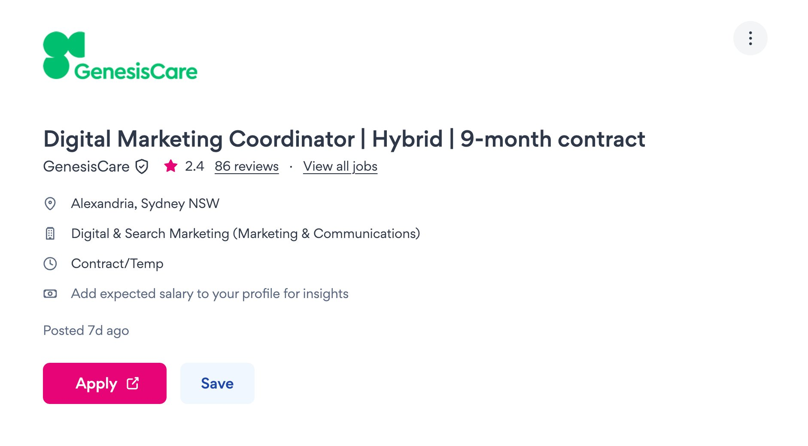
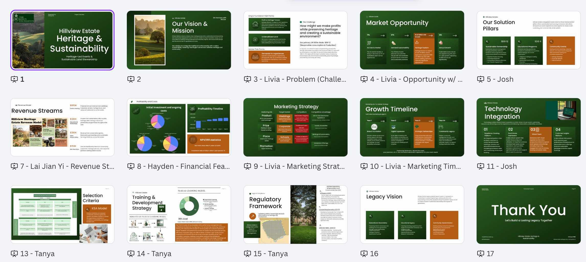
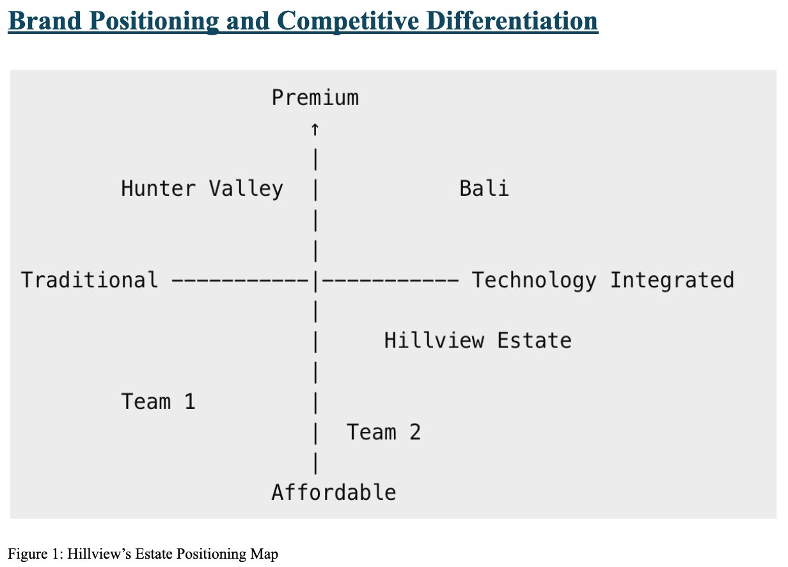
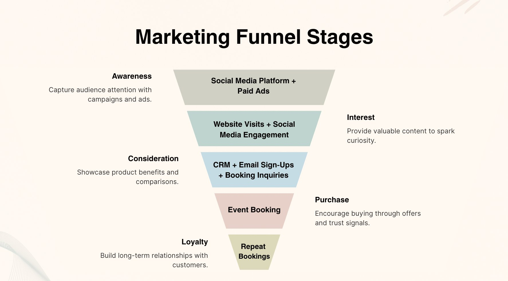
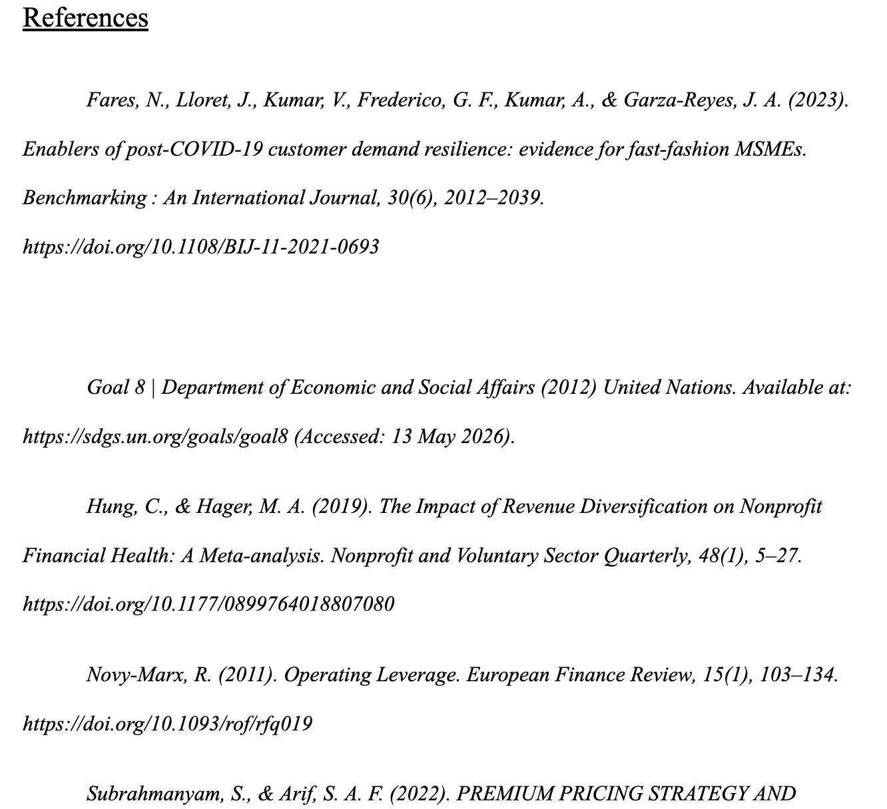
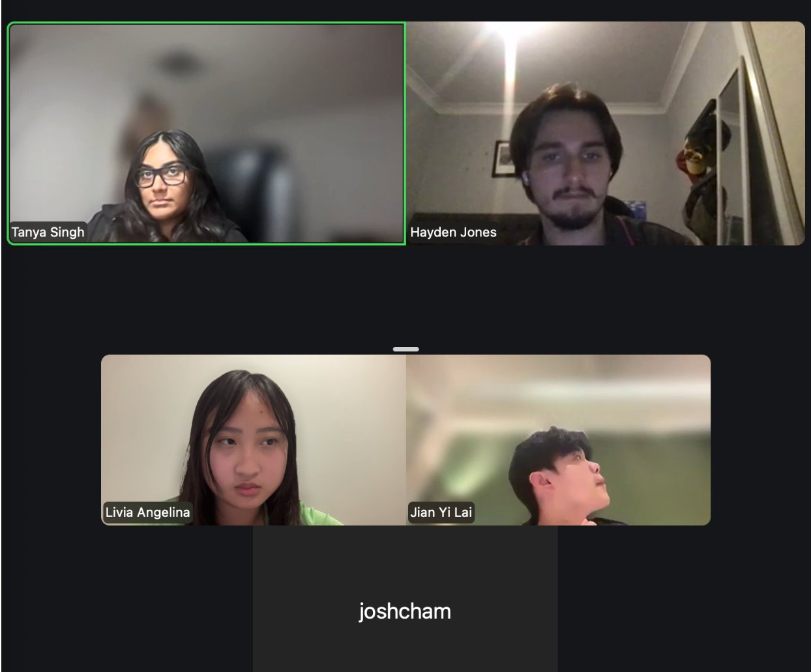

Bachelor of Commerce (Marketing) · Macquarie University
Marketing strategist with a sharp eye for consumer behaviour, digital channels, and brand storytelling — ready to make an impact from day one.
View my application →01 — About Me
I'm a final-year Bachelor of Commerce (Marketing) student at Macquarie University, passionate about the intersection of data, design, and digital experience.
In my Capstone unit, I led the design and marketing strategy for a real client brief — transforming The King's Foundation's 15,000 acres of underutilised heritage land into Hillview's Estate, a sustainable premium event venue. That project sharpened everything I now bring to work: strategic thinking, cross-functional collaboration, evidence-based decision making, and the confidence to own a brief end-to-end.
I thrive in fast-paced, ambiguous environments. I ask questions, find patterns, and build things that move people — and I've just landed my first internship as a Digital Marketing Coordinator to prove it.
02 — The Role
GenesisCare
A hands-on role supporting digital marketing across websites, campaigns, email, paid media and social channels within a purpose-driven healthcare environment.

SCREENSHOT — GENESISCARE JOB ADVERTISEMENT · SEEK.COM.AU
Here's how my Capstone experience maps directly to what GenesisCare is looking for:
03 — Capstone Evidence
In MQBS3010, my interdisciplinary team developed a full business solution for The King's Foundation — converting 15,000 acres of heritage land in the Southern Highlands into Hillview's Estate, a sustainable premium event venue targeting weddings, corporate retreats, and educational programs.
Brand & Design
As Design and Marketing Lead, I built the entire pitch deck template to match The King's Foundation's branding — ensuring visual consistency, professional polish, and a logical narrative flow structured using the design thinking framework.

Strategy
I created Hillview Estate's positioning map — identifying the competitive gap and articulating our key differentiator: AI-powered photography (FotoOwl) bundled into premium all-inclusive event packages to remove a known consumer pain point.

Digital Marketing
I developed the full GTM marketing funnel across a $50k launch budget — Meta for weddings, LinkedIn for corporate, Pinterest for engaged couples, SEO for organic discovery, and email/CRM to drive conversions and CLV.

Research
Every recommendation was backed by data: 2.1M Southern Highlands visitors, 71% of Australians preferring live events post-pandemic, and 65% of event companies increasing AI adoption. I recorded findings in shared documents to guide the team's decisions.

This shaped our decision to integrate photography into our packages — turning a $2,000–$4,000 outsourced expense into a competitive differentiator that directly addresses what customers hate about event planning.
Midway through the project, our team faced a deliberate disruption — a sudden pivot designed to test how we handle conflict and adapt under pressure. At the time we were transitioning from storming to norming (Tuckman's framework), and the challenge forced us to reset fast.
We called an urgent three-hour Zoom, divided responsibilities by expertise, and collectively pivoted our SDG focus from SDG 5 to SDG 12 under deadline. I stepped up immediately as Design and Marketing Lead — taking ownership of the deck structure rather than waiting to be assigned.

TEAM ZOOM SESSION — AGILITY CHALLENGE · LIVIA ANGELINA, TANYA SINGH, HAYDEN JONES, JIAN YI LAI, JOSH CHAM
Rather than making every decision by committee, we divided and trusted — and delivered a client-ready pitch deck on time.
04 — Reflection
I joined the team late — transferred in Week 2, missed Weeks 3 and 4 due to illness. That disrupted the forming stage and created an awkward dynamic I had to navigate carefully. I learned that I tend to "stay small" in new environments, suppressing ideas to avoid friction. Recognising this pattern was the first step to changing it.
When the agility challenge hit, I couldn't afford to stay small. I re-engaged immediately — volunteering for the design and marketing lead role rather than waiting to be directed. That shift from reactive to proactive is something I now carry into every new environment, including my upcoming internship.
Our Week 6 feedback showed high psychological safety but lower group identification — trust was task-based, not emotional. I learned that effectiveness isn't just about output; it's about connection. Going forward I'd invest earlier in genuine rapport with teammates, not just task delivery.
Our ideation sessions were productive but messy — no time limits, rambling discussions. I learned the value of timeboxing every phase. Creativity needs a container. In a fast-moving digital marketing role, that discipline is how campaigns keep moving without losing quality.
05 — Growth Mindset
I'm actively building hands-on capability in Salesforce, Google Ads, and Meta Ads Manager — moving from strategic understanding to execution-level confidence. Starting my Digital Marketing Coordinator internship is the first real step in this.
A lesson from both the Capstone and industry guests: every decision should trace back to evidence. I'm building stronger habits around analytics — reading dashboards critically, asking "so what?" before reporting, and connecting metrics to real business outcomes.
The HR Business Partner at Cochlear described a lifelong learning mindset as one that contributes and stays open even in uncomfortable situations. That's the professional I'm becoming — someone who keeps learning on the job, not just in the classroom. As the Head of Network Delivery at Nokia put it: it's okay to fail once, as long as you learn and don't repeat the mistake.
Graduating October 2026, I'm building the foundations of a long-term digital marketing career in Australia. The internship offer I've already secured is proof that showing up authentically — being transparent about my situation, my skills, and my timeline — is the right strategy.
06 — Let's Connect
I'd love to bring my energy, strategic thinking, and genuine curiosity to the GenesisCare team.